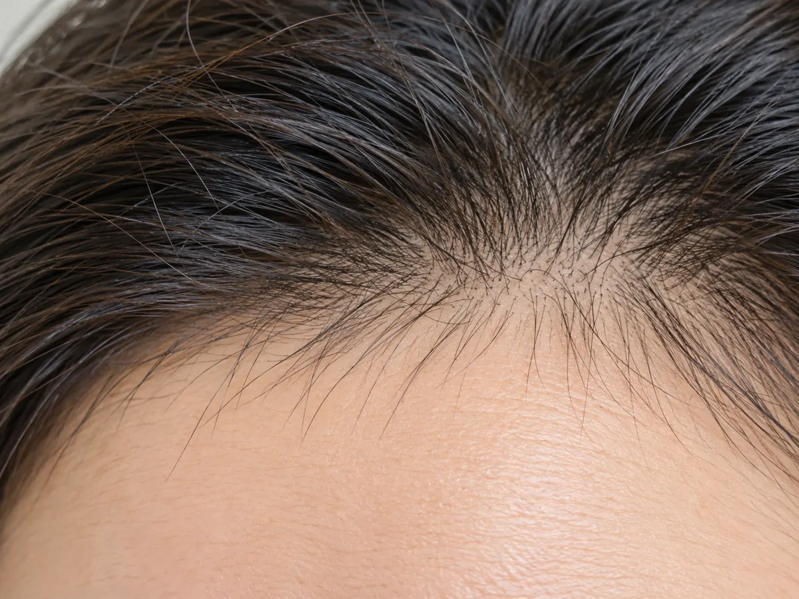

By the time the hair fall starts, the cause is usually months behind you.
Hair coming out in handfuls in the shower, on the pillow, in the brush. What makes it confusing is that life may feel calm now. The stressful stretch, the illness, the surgery, the crash diet, may be well behind you, which makes the hair fall seem to come from nowhere.
Many people are told it is just stress and will pass. Sometimes that is true. But when the hair fall is heavy, drags on, or you cannot trace it to anything, it is worth understanding properly.

At any time most of your hair is growing and a small portion is resting before it sheds. A significant physical or emotional stressor can push a large number of follicles into the resting phase together. Because the resting phase lasts around three months, the hair fall usually appears two to four months after the event. That delay is the signature of the condition, and the reason the cause is so easily missed.
Common triggers include high fever or illness, surgery, rapid or significant weight loss, a sudden change in diet, severe emotional stress, bereavement, or major upheaval. One trigger people often overlook is medication: starting or stopping certain drugs, including coming off the oral contraceptive pill, can set off the same delayed hair fall, so a recent change in medication is always worth checking.
Recovery depends on whether the trigger has truly resolved and whether the body has what it needs to rebuild. Thyroid imbalance, certain medications, and ongoing stress can each keep the hair fall going, and low iron stores may also play a part, though their role is less clear-cut than it is often presented. When hair fall continues beyond six months it is described as chronic, and that warrants a closer look.
The work here is detective work: locating the trigger, confirming it has passed, and checking that nothing is holding back recovery.
Where blood work is useful, we guide you on what to test and how to read it against your hair fall timeline. Much of the early workup can also be started with your GP, with the consultation focused on the part that needs a trained eye.
I can't think of anything stressful. Why is my hair falling out?
Will my hair grow back?
How is this different from postpartum hair loss?
Could my medication be causing this?
When should I worry it is something more?
Book a Consultation
If your hair has been falling out heavily and you cannot trace why, or it has continued longer than you expected, a consultation can give you answers. You will leave understanding what set it off, whether anything is slowing your recovery, and what to expect from here.
Book a Consultation